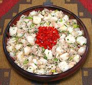

|
Giant White Corn & Tuna SaladChile - Ensalada de Atún y Maiz Pelado | ||||
| Serves: Effort: Sched: DoAhead: |
6 salad *** 14+ hrs Best |
Giant White Corn originated in Mexico, but is a popular ingredient in soups and salads as far south as northern Chile. The firm corn makes an excellent contrast with the soft tuna. | |||
|
2 3/4 2 2 ----- 1/4 1/4 1 ----- |
c c T 6oz ----- c c t ----- |
Giant Corn (1) Scallions Parsley, flat Cans Tuna (2) -- Dressing Lemon Juice Olive Oil, ExtV Salt -------------- |
Do-Ahead - (11-1/2 hrs - 20 min work)
|